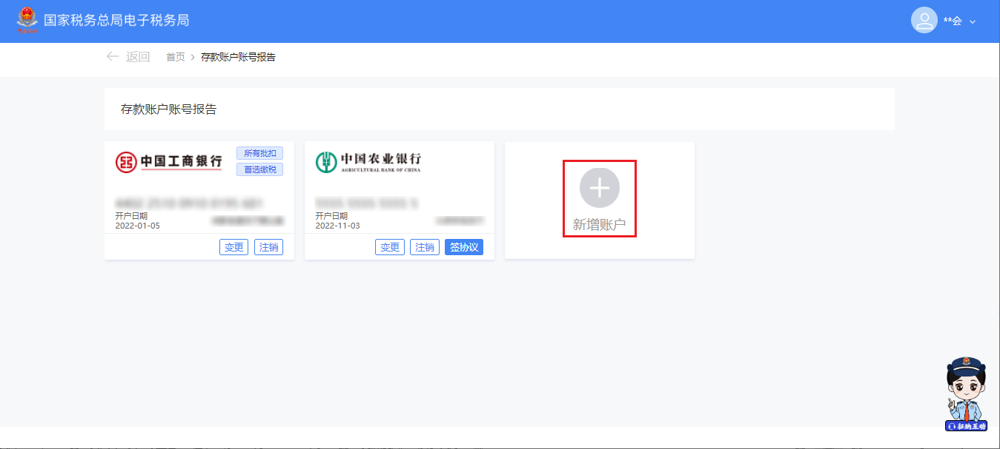
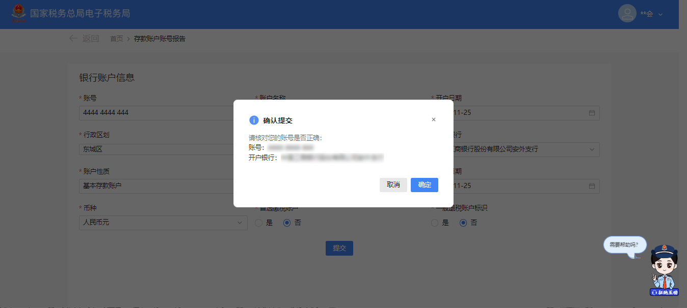
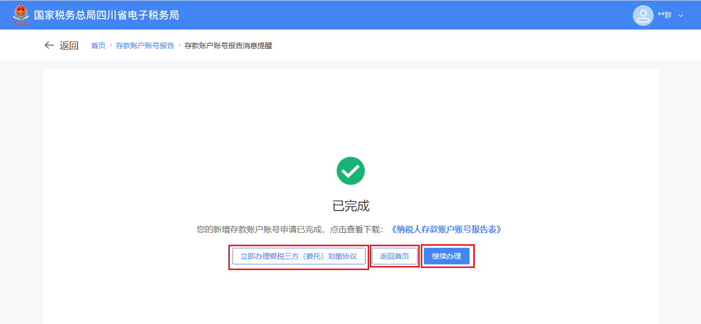
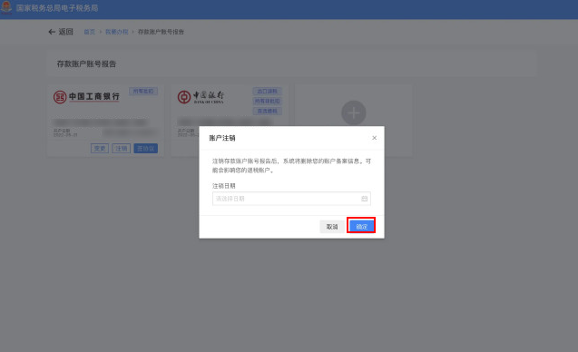
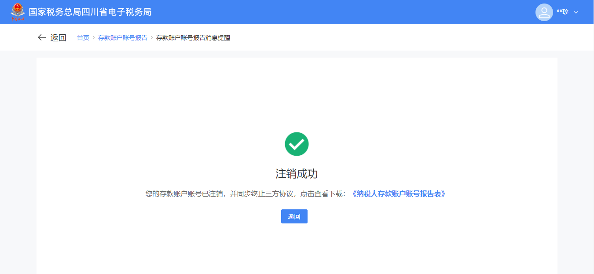

电子税务局 · 操作指引
← 返回目录
存款账户账号报告
本指引适用于纳税人在电子税务局进行银行存款账户的新增、变更、注销报告，
以及签订银税三方（委托）划缴协议的操作
如遇问题请拨打 12366 纳税服务热线
🏦 存款账户报告
🤝 三方协议
🖥️ 网页端
📋 新增 / 变更 / 注销
一
适用对象
✅ 需向税务机关报告银行存款账户信息的纳税人
✅ 需要新增、变更或注销已报告账户信息的纳税人
✅ 需要签订或终止银税三方（委托）划缴协议的纳税人
✅ 需要新增、变更或注销已报告账户信息的纳税人
✅ 需要签订或终止银税三方（委托）划缴协议的纳税人
二
操作路径以下三种方式均可进入功能，任选其一即可：
方式一
我要办税
→
综合信息报告
→
制度信息报告
→
存款账户账号报告
方式二
首页消息提醒
→
点击跳转链接直接进入
方式三
首页搜索栏
→
输入"存款账户"
→
点击搜索结果进入
三
操作步骤1
登录电子税务局，按路径进入 【存款账户账号报告】 功能

2
进入功能界面，页面展示已采集的存款账户信息列表，可进行以下操作：
新增账户
变更
注销
签协议

➕ 新增存款账户
1
点击 【新增账户】，跳转至新增账户填写界面

2
填写银行账户信息。开户银行栏可输入关键字搜索，填写完毕后点击 【提交】

3
弹出确认框，展示所填写的开户银行和账号信息，核对无误后点击 【确认】

4
跳转至提交成功界面，可进行以下操作：
✅ 系统提示："您的新增存款账户账号申请已完成"
• 点击 【纳税人存款账户账号报告表】 → 下载 PDF 表单留存
• 点击 【立即办理银税三方（委托）划缴协议】 → 跳转签订三方协议
• 点击 【继续办理】 → 返回功能界面继续操作
• 点击 【返回首页】 → 返回系统首页
• 点击 【纳税人存款账户账号报告表】 → 下载 PDF 表单留存
• 点击 【立即办理银税三方（委托）划缴协议】 → 跳转签订三方协议
• 点击 【继续办理】 → 返回功能界面继续操作
• 点击 【返回首页】 → 返回系统首页

📌 特殊情形说明
① 报验户 / 跨区税源户：点击【新增】后，可选择同步注册地账户信息，点击【确定】获取注册地主管税务机关的银行账号信息并预填，支持修改。若未获取到信息，系统提示选择手工录入。② 分支机构：点击【新增】后，可选择同步总机构账户信息，点击【确定】后信息自动带入填写页面，支持修改。
✏️ 变更存款账户信息
未签协议
点击对应账户的 【变更】，进入变更页面，修改信息后点击 【提交】

✅ 提交成功后，可下载报告表、跳转签订三方协议或返回继续办理（同新增成功页面操作）
已签协议
点击 【变更】 后，页面顶部提示：
⚠️ "此账户已签订三方协议信息，部分信息无法修改，如需变更请先终止三方协议。"
• 如需变更受限字段 → 点击 【终止三方协议】 后再操作
• 如只变更账户名称、首选缴税账户、一般退税账户标识 → 可直接修改并提交，无需终止协议
• 如需变更受限字段 → 点击 【终止三方协议】 后再操作
• 如只变更账户名称、首选缴税账户、一般退税账户标识 → 可直接修改并提交，无需终止协议

✅ 提交成功后，操作同上（下载表单 / 签订协议 / 返回）
🗑️ 注销存款账户
1
在账户列表中，点击需注销账户的 【注销】 按钮

2
弹出输入框，填写注销日期，点击 【确定】

3
跳转至注销成功界面
✅ 系统提示："您的存款账户账号已注销，并同步终止三方协议"
• 点击 【纳税人存款账户账号报告表】 → 下载 PDF 表单
• 点击 【返回】 → 返回系统首页
💡 注意：无论该账户是否已签订三方协议，注销时系统均会自动同步终止对应协议，无需手动操作。
• 点击 【纳税人存款账户账号报告表】 → 下载 PDF 表单
• 点击 【返回】 → 返回系统首页
💡 注意：无论该账户是否已签订三方协议，注销时系统均会自动同步终止对应协议，无需手动操作。

🤝 签订三方协议
1
在账户列表中，点击对应账户的 【签协议】，系统跳转至银税三方（委托）划缴协议签订界面，按页面提示完成签订操作

💡 三方协议签订后，税务机关可在您应缴税款时直接从该账户扣划，无需每次手动缴款，操作更便捷。
四
注意事项
报送信息须真实合法：纳税人对所填报材料的真实性和合法性承担责任，请如实填写账户信息。
账户唯一性要求：纳税人的一般退税账户和首选缴税账户均只能设置一个，如需更换请先将原账户的标识取消。
已签协议账户的变更限制：已签订三方协议的账户，仅可直接变更账户名称、首选缴税账户、一般退税账户标识，其他信息需先终止协议后方可修改。
五
常见问题（FAQ）Q1已签订三方协议的银行账户，可以直接变更哪些信息？
A
可直接变更的信息包括：账户名称、首选缴税账户标识、一般退税账户标识，其余信息因受协议约束无法直接修改。
Q2我想变更已签三方协议账户的其他信息（如账号），怎么操作？
A
有两种方式：① 新增一条正确的存款账户报告，再重新签订三方协议；② 先进入账户报告功能终止三方协议，再修改账户信息，修改完成后根据需要重新签订协议。
Q3注销账户时，需要手动终止三方协议吗？
A
不需要。注销账户时，系统会自动同步终止该账户关联的三方协议，无需单独操作。
六
本节小结
✅ 本节小结：
- 功能路径：我要办税 → 综合信息报告 → 制度信息报告 → 存款账户账号报告
- 支持对银行账户进行新增、变更、注销，以及签订三方协议
- 已签三方协议的账户，仅可直接变更账户名称、首选缴税账户、一般退税账户标识
- 注销账户时，系统将自动终止关联的三方协议
- 一般退税账户与首选缴税账户各只能设置一个
- 报验户、跨区税源户、分支机构可通过同步上级机构账户信息快速填写